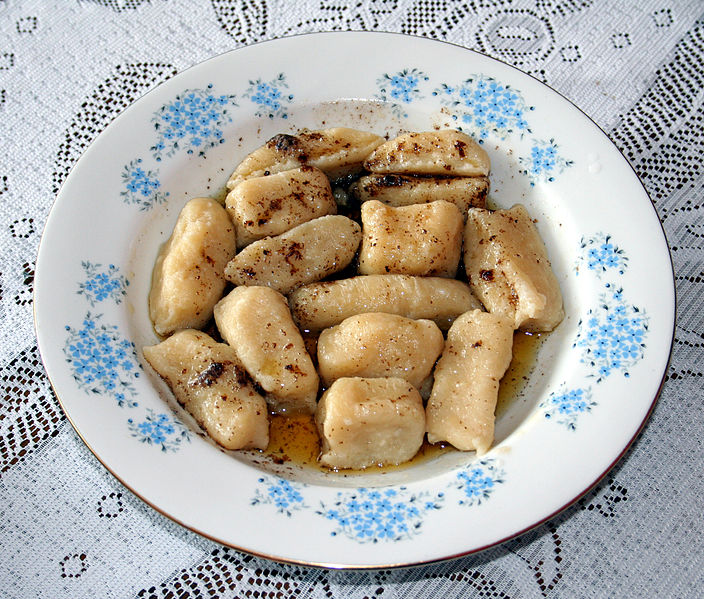

Ленивые вареники с творогом - рецепт
Ингридиенты
- Сахар - 1 столовая ложка
- Сухой творог - 400 г
- Яйцо куриное - 2 шт.
- Пшеничная мука - 1 стакан
- Соль по вкусу
Инструкция приготовления
- В начале ставим кастрюлю с водой на огонь, пока закипит - готовим тесто.
- Тщательно смешиваем творог, яйца и сахар. Добавляем полстакана муки и хорошо перемешиваем.
- Полстакана муки высыпаем на стол. Обваливаем тесто в муке.
- Делаем из теста колбаски, затем нарезаем на кусочки и немного прижимаем с двух сторон, обмакивая в муку.
- Опускаем в кипящую воду. Всплывшие вареники варить 3 минуты
- Сливочное масло или сметана к вареникам добавят вам баллов авторитета в глазах котЭ